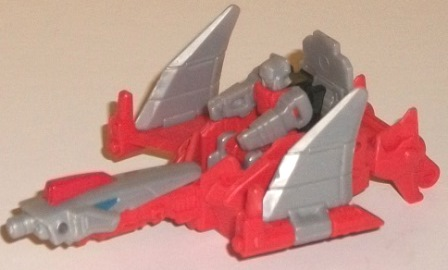

Allegiance
: Autobot
Size
: Titan Master Set
Difficulty of Transformations
: Very
Easy
Color Scheme:
Light milky gray,
light pale red, and some light metallic silvery blue, silver, and black
Rating
: 4.8
"Ptero" is basically
the Titan Master version of the G1 Dinobot, Swoop. In the Titan Master's
robot mode, it appropriately looks like Swoop's robot mode, but without
the wings and "squeezed" into Titan Master proportions. His arms are fairly
generic, but the details on his little legs reflect the ridged vent shapes
and angular feet on G1 Swoop. The chest has a dome that looks like the
pterodactyl nose on Swoop's chest. The head is the only part that doesn't
really look like Swoop, with a more triangular visor and no big angular
forehead crest, but rather a pretty normal helmet and face. The light milky
gray plastic is pretty blah, though the red on the upper legs and main
body helps make him not look TOTALLY boring in this mode-- a lack of paint
definitely hurts this mode, though. Like all Titan Masters in robot mode,
Ptero can move at the neck, shoulders, and back-and-forth at the hips and
knees (both legs move as one, since they're connected at said knees). In
head mode, the face is a pretty good copy of Swoop's head, but without
the long forehead crest because of the space limitations of a Titan Master's
head. He's got a multi-ridged black-painted "helmet" with a silver, narrow-chinned
face and two blue eyes. All the light gray on the sides and red on the
top do stick out a bit from an otherwise black-lined face, but otherwise
it's a pretty good head mode.
The first mode of Ptero's
accessory is, appropriately enough, a pterodactyl. (Well... a ptero
saur
,
I guess. The crest is wrong for a pterodactyl.) Ptero himself is plugged
in head-first into the front body of the pterodactyl, to essentially make
the body more "solid" and cover up the seat in the middle. Overall this
mode is pretty solid-- it's pretty much a robotic pterodactryl with the
legs splayed out behind, in mid-flight. I kinda wish the legs and neck
could fold down so the pterodactyl could stand up, but sadly that's not
the case-- with the exception of the wings being able to flap up-and-down
a bit at the midsection, this mode's basically a brick. (Then again, if
he could stand up you could see part of Swoop's head poking out of the
stomach, so I guess that's for the best.) The proportions for this mode
are quite good, though, and there aren't any real extras beyond the weapon
handle folded down behind the rear. There's some sparse robotic details
and lines here and there, along with some vents near the front of the body
and on the neck, but generally the mold detailing is a bit lacking (particularly
for a toy in the Titans Return line). There are a few cool details beyond
just vents, though, like gun-like details on the mid-point of each wing
and exhaust ports in the middle of the feet. The color scheme is like Ptero's--
it's pretty much all a blah light milky gray and light pale red, and very
little paint, unfortunately. The body in particular really could've used
some paint, but the blue eyes and red headcrest are the only paint on this
accessory, which is definitely an oversight, in my opinion.
The accessory's other
main mode is a "jet", though it's mostly just the pterodactyl mode inverted.
You just turn the accessory upside down, turn the head around so a gun
nozzle is pointing forward, flip the gray wing halves up, and then take
out Ptero, flip up the seat, and sit him in it. Other than there actually
being a place for Ptero to sit in the jet (along with little pegs for his
feet so he fits in securely in his seat), there really isn't much unique
about this mode compared to the pterodactyl mode. Beyond a seat, no new
details, just a few bits flipped around. It's mostly just a jet because
Hasbro says so and it's very very vaguely in the shape of one if you squint.
Generally this mode seems to have sacrificed a lot for the pterodactyl
mode.
If the jet mode was
an afterthought, the weapon mode was an afterafter
after
thought.
Like many Titan Master sets' weapon modes (unfortunately), it's sort of
a "halfway" mode between the other two, which for this set in particular
doesn't mean much. All you do is take the pterodactyl mode, turn the head
so the gun part is facing forward for jet mode, and than pull out the handle
on the back. That's it. In addition the handle is a bit oddly placed, so
many TFs will have to hold the weapon sideways. It's just best forgotten
about.
Titans Return Ptero
is one of the weakest (if not THE weakest) of the Titan Master sets. The
pterodactyl mode is pretty good overall (even though it definitely lacks
paint), but pretty much everything else about this set is okay at best,
an afterthought at worst. There's horribly weak weapon and jet modes, a
bland color scheme, and even Ptero himself is a bit bland and has the Swoop
head mode without a proper headcrest because of the size limitations of
Titan Masters' head modes. Not recommended unless you're either A. a huge
Dinobot fan or B. really want to put Swoop's head on someone else's body.
No Stats
Review by Beastbot